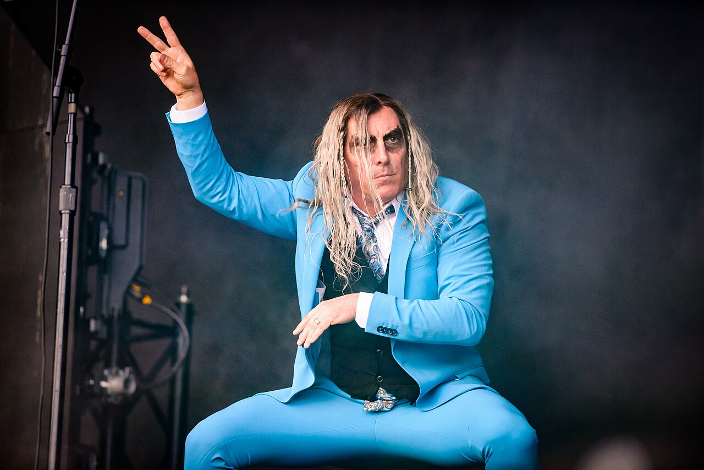
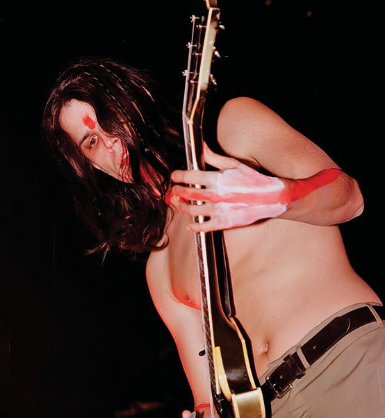
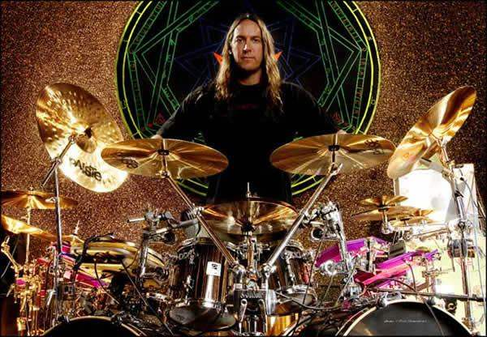
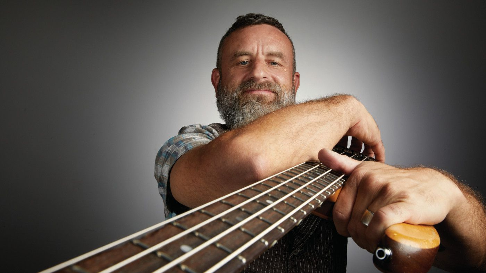

Integrantes
Maynard James Keenan

Maynard James Keenan é a voz e uma das principais figuras conceituais do TOOL. Sua interpretação alterna entre agressividade, introspecção e passagens quase ritualísticas, enquanto suas letras exploram temas como transformação, mortalidade, consciência e conflito humano. Conhecido por manter uma postura deliberadamente distante dos holofotes durante os shows, Keenan também desenvolveu projetos musicais paralelos, como A Perfect Circle e Puscifer.
Adam Jones

Guitarrista e principal responsável pela identidade visual do TOOL, Adam Jones possui formação e experiência profissional ligadas às artes visuais e aos efeitos especiais. Seu trabalho ajudou a estabelecer a estética característica dos videoclipes, capas e apresentações da banda. No TOOL, sua guitarra frequentemente funciona menos como instrumento de virtuosismo e mais como elemento de construção de atmosfera, textura e tensão.
Danny Carey

Danny Carey é o baterista do TOOL e uma das figuras centrais na construção rítmica da banda. Seu estilo combina precisão, polirritmia e uma forte influência do jazz e da percussão. Sua bateria ocupa um papel particularmente importante nas longas composições do grupo, criando estruturas sobre as quais guitarra, baixo e voz podem se desenvolver. Carey também possui interesse por geometria, simbolismo e diferentes tradições esotéricas, elementos que aparecem associados ao seu trabalho artístico.
Justin Chancellor

Justin Chancellor assumiu o baixo do TOOL em 1995, substituindo Paul D'Amour, e permanece na formação desde então. Antes de entrar na banda, Chancellor tocava no grupo britânico Peach, que chegou a fazer uma turnê com o TOOL. Seu baixo tornou-se uma parte fundamental do som da banda, frequentemente assumindo linhas melódicas complexas e dialogando diretamente com a bateria de Danny Carey e a guitarra de Adam Jones.